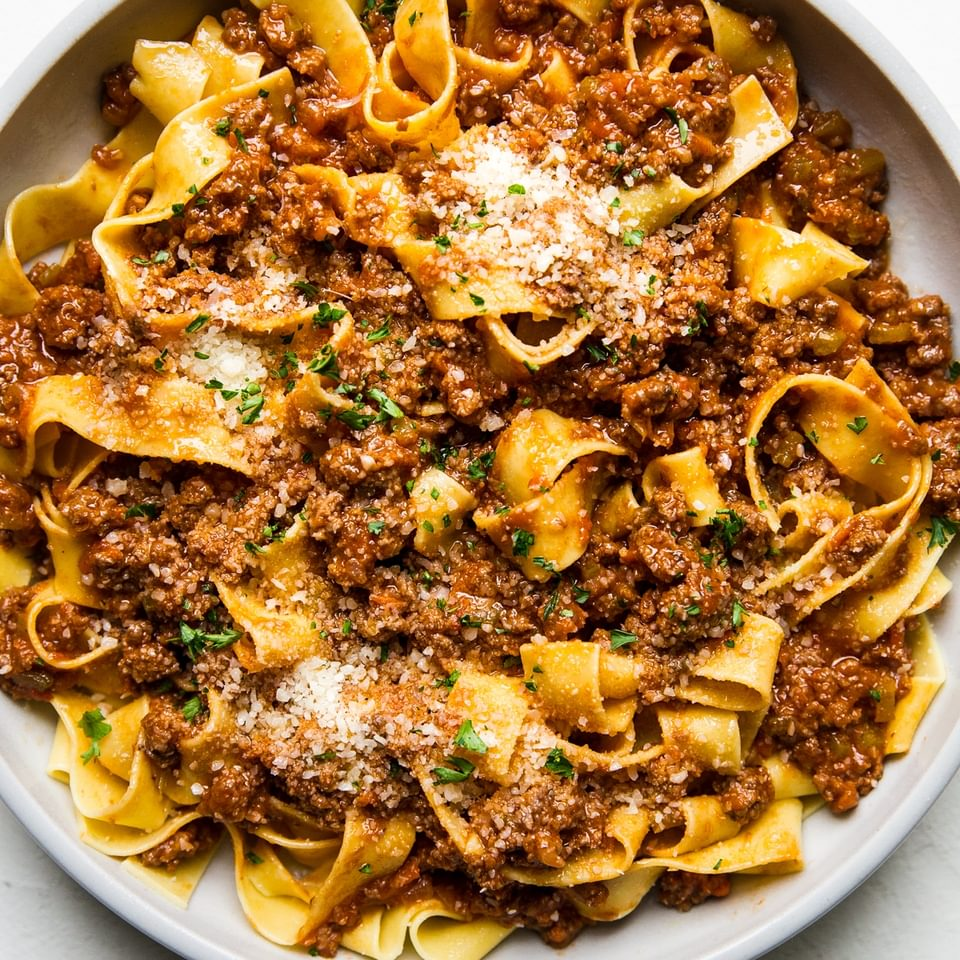

Bolognese

Description
Hearty and comforting, this meaty, easy bolognese sauce recipe takes less time to make than it does to disappear into hungry tummies.
Ingredients:
- 2 tbsp olive oil
- 1 cup grated carrots
- 1 cup celery, minced
- 1 cup onions, finely minced
- 1 lb ground beef (80/20)
- 1 lb ground pork
- 1 25 oz jar store-bought marinara
- 1/2 cup heavy cream
- 1 lb wide pasta noodles, such as pappardelle or tagliatelle
- salt and pepper
Steps:
- In a large saucepan heat olive oil over medium heat. Add in carrots along with celery and onions and sauté until they're just tender, about 3 minutes. Add the ground beef and ground pork, and cook until browned, breaking up the meat as you stir.
- Pour in the jar of store-bought marinara sauce along with salt and pepper and simmer for 30 minutes, stirring occasionally, until sauce thickens.
- When the Bolognese sauce has reached your desired consistency, stir in the heavy cream.
- Remove from heat, and serve over your favorite pasta—we like to use pappardelle or tagliatelle—and top with freshly grated parmesan cheese.
Return to top
Return to mainpage